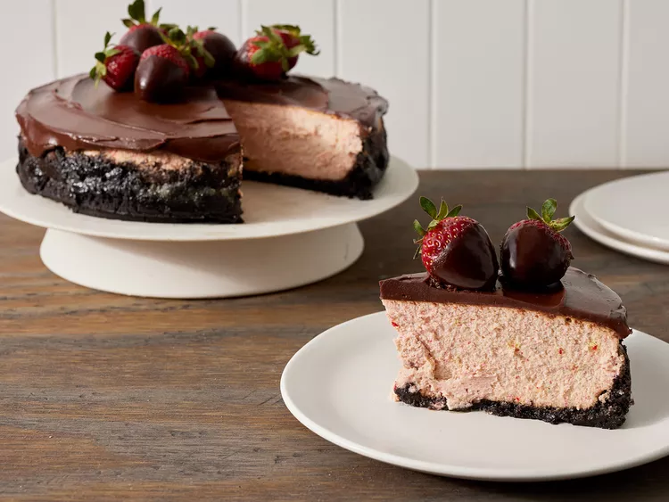

cheesecake
Description
So creamy and good - the strawberry flavor really comes through in the
cheesecake and the chocolate crust and ganache work great with the
strawberries. You will Love this!

Ingredients
Crust:
- cooking spray
- 1 (9 ounce) box chocolate wafer cookies (such as Nabisco® Famous Chocolate Wafers)
- 5 tablespoons unsalted butter, melted
- 3 tablespoons granulated sugar
Chocolate Ganache:
- 1 cup heavy whipping cream
- 1 (4 ounce) bar semisweet chocolate, finely chopped
- 1 (4 ounce) bittersweet chocolate, finely chopped
- 10 whole and halved strawberries, for garnish
Directions
Steps
- Preheat the oven to 325 degrees F (165 degrees C).
Wrap outside of a lightly greased (with cooking spray) 9-inch springform pan with a double
layer of heavy-duty aluminum foil.
- Stir together cookies, melted butter, and granulated sugar in a bowl.
Press onto bottom and 1-inch up sides of prepared pan.
- Bake in the preheated oven until crust is set, 7 to 8 minutes.
Transfer to a wire rack; cool completely, 30 minutes.
- Preheat the oven again to 325 degrees F (165 degrees C).
go back